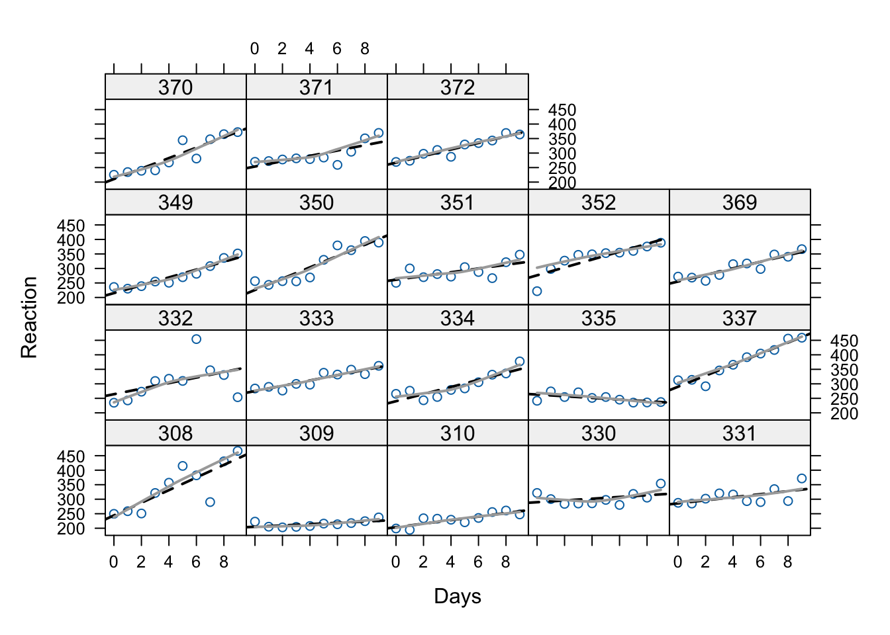

9 Using lme4 to fit MLM to longitudinal data
Longitudinal data come in all shapes and sizes, but we need the data in a particular form
to be able to fit models using lme4
Person period refers to a dataset where each row corresponds to an observation of a
person in a particular period of time. This is also called “long” (as opposed to wide) and within the tidyverse it is referred to as tidy data.
For example, we see below a printout of the first 6 rows of the sleepstudy dataset
that comes with the lme4 package. As you can see, the first 6 rows all are from Subject 308.
## Reaction Days Subject
## 1 249.5600 0 308
## 2 258.7047 1 308
## 3 250.8006 2 308
## 4 321.4398 3 308
## 5 356.8519 4 308
## 6 414.6901 5 3089.1 Data description: average reaction time per day for subjects in a sleep deprivation study (Belenky et al. 2003)
- The response variable, Reaction, represents average reaction times in milliseconds (ms) on a series of tests given each Day to each Subject (Figure 1)
- On day \(0\) the subjects had their normal amount of sleep. Starting that night they were restricted to 3 hours of sleep per night
- Note how this will affect the model interpretation
- There are no level 2 explanatory variables in this data set, so we’re simply going to model growth as random and take a look at some examples of how to evaluate it
9.1.1 Visualization of the data
There are only 18 participants in this study, which is typical of a repeated measures / longitudinal lab study in cognitive psychology and cognitive neuroscience. Let’s see whether linear trajectories seem to fit by graphing the data for each participant. The code below uses xyplot a great function for producing multiple scatterplots.
What do you see in this plot? What seems to be the common theme across subjects in terms of the relationship between day in the study (number of days with sleep deprivation) and Reaction time?

9.2 Fitting the level-1 model
Theory and experience suggest that as people become more cumulatively sleep deprived, cognitive functioning should suffer.
The questions that we can answer with MLM are as follows:
- Does a model with only linear growth (change) fit better than a model with both linear and quadratic growth?
- Is there variance in the intercepts?
- Is there variance in the slopes?
We should answer question 1 first, since there will be more than one “slope” if we fit a model with quadratic growth.
9.2.1 Model Equations
We’ll start with a random intercept model first, so that we can test whether linear slopes should be random using a comparison test.
Level 1:
\[ Y_{ti} = \pi_{0i} + \pi_{1i}(a_{ti}-L) + e_{ij} \] Level 2:
\[ \pi_{0i} = \beta_{00} + r_{0i} \] \[ \pi_{1i} = \beta_{10} \]
Combined model:
\[ Y_{ti} = \beta_{00} + \beta_{10}(a_{ti}-L) + r_{0i} +e_{ij} \]
In the equation \(L\) stands for “lag” and will be 0 to start. That means that we can just use the raw \(a\) variable which is just Days in our example as the time is measured in days since full sleep, starting with zero.
Remember, this coding for time has an effect on the intercept variability. In the models we run today, the intercept variance will be the variance across individuals in their reaction time on the first day of the study (with full sleep).
Below, and for HW we’ll see how changing this “zero point” or “center” of the data changes the intercept variance estimate when we allow different slopes.
9.3 Model building
We use the lmer function exactly as before to fit the intercepts and slopes as outcomes models with cross-sectional data. However, we’ll proceed in two steps this time:
- Fit the linear growth model as described above – without a random slope and examine:
The variance of the intercepts as \(\text{Var}(r_{0i}) = \tau_{00}\)
The coefficient of the linear time (Days) variable
- Fit a random slopes model and compare to the first
## Linear mixed model fit by REML ['lmerMod']
## Formula: Reaction ~ Days + (1 | Subject)
## Data: sleepstudy
##
## REML criterion at convergence: 1786.5
##
## Scaled residuals:
## Min 1Q Median 3Q Max
## -3.2257 -0.5529 0.0109 0.5188 4.2506
##
## Random effects:
## Groups Name Variance Std.Dev.
## Subject (Intercept) 1378.2 37.12
## Residual 960.5 30.99
## Number of obs: 180, groups: Subject, 18
##
## Fixed effects:
## Estimate Std. Error t value
## (Intercept) 251.4051 9.7467 25.79
## Days 10.4673 0.8042 13.02
##
## Correlation of Fixed Effects:
## (Intr)
## Days -0.371What we see above is that \(\tau_{00}\) which is the only variance component at level 2 (the variance of the \(r_{0i}\)’s) is 1378.2. That’s a large number because we’re measuring reaction time in milliseconds. The Std.Dev. column shows us that on average, the participants’ reaction time differs from the common intercept \(\beta_{00} = 251.41\) by about 37.12 milliseconds.
9.4 Model comparison and testing
Remember, significance testing with multilevel models can be tricky. This data set is actually balanced, so we could use an ANOVA based test, but let’s explore the options we’ve reviewed
9.4.1 Option 1: using confidence intervals
Since we might suspect that we need the linear growth term, testing it’s “significance” might be most easily accomplished with the bootstrapping method:
## 2.5 % 97.5 %
## .sig01 24.242737 48.89273
## .sigma 27.722382 34.27304
## (Intercept) 233.755861 268.33898
## Days 8.876771 11.96578So we see that a parametric bootstrap \(95\%\) CI for the linear days effect is \((8.80, 12.03)\)
We could also use any number of the “fixes” in the lmerTest or pbkrtest packages to get a p-value
9.4.1.1 Random slopes
More importantly, we need to determine whether to allow slopes to randomly vary. Again, it might be that we do so by design, but if we were building the model from the ground up, we could test whether \(\tau_{10} = 0\) with a model comparison test.
First, we fit the random slopes model to compare with the previous one.
Changing the model to allow slopes to vary changes the equation for \(\pi_{1i}\) to
\[ \pi_{1i} = \beta_{10} + r_{1i} \]
The combined model thus is:
\[ Y_{ti} = \beta_{00} + \beta_{10}(a_{ti}-L) + r_{0i} +r_{1i}(a_{ti}-L) +e_{ij} \]
This means that we’re adding 2 new variance components the \(\text{Var}(r_{1i}) = \tau_{10}\) and the \(\text{Cov}(r_{0i},r_{1i}) = \tau_{01}\)
9.4.2 Tests
As an exercise, let’s see how things differ between the ordinary likelihood ratio test and a bootstrap version
randSlope <- lmer(Reaction ~ Days + (Days|Subject), sleepstudy)
# ordinary LRT
anova(randSlope, randIntMod, refit = FALSE)## Data: sleepstudy
## Models:
## randIntMod: Reaction ~ Days + (1 | Subject)
## randSlope: Reaction ~ Days + (Days | Subject)
## npar AIC BIC logLik -2*log(L) Chisq Df Pr(>Chisq)
## randIntMod 4 1794.5 1807.2 -893.23 1786.5
## randSlope 6 1755.6 1774.8 -871.81 1743.6 42.837 2 4.99e-10 ***
## ---
## Signif. codes: 0 '***' 0.001 '**' 0.01 '*' 0.05 '.' 0.1 ' ' 1With the ordinary LRT we see that the random slopes model has a lower AIC, BIC and deviance. The change in deviance is significant with a \(\chi^{2}(2) = 42.14, p < .001\). These results favor the model with both random intercepts and random slopes.
Now let’s see if this holds up with a bootstrap test
## Bootstrap test; time: 13.96 sec; samples: 1000; extremes: 0;
## large : Reaction ~ Days + (Days | Subject)
## stat df p.value
## LRT 42.139 2 7.072e-10 ***
## PBtest 42.139 0.000999 ***
## ---
## Signif. codes: 0 '***' 0.001 '**' 0.01 '*' 0.05 '.' 0.1 ' ' 1Now let’s see the estimates for \(\tau_{10}\) and \(\tau_{01}\)
## Linear mixed model fit by REML ['lmerMod']
## Formula: Reaction ~ Days + (Days | Subject)
## Data: sleepstudy
##
## REML criterion at convergence: 1743.6
##
## Scaled residuals:
## Min 1Q Median 3Q Max
## -3.9536 -0.4634 0.0231 0.4634 5.1793
##
## Random effects:
## Groups Name Variance Std.Dev. Corr
## Subject (Intercept) 612.10 24.741
## Days 35.07 5.922 0.07
## Residual 654.94 25.592
## Number of obs: 180, groups: Subject, 18
##
## Fixed effects:
## Estimate Std. Error t value
## (Intercept) 251.405 6.825 36.838
## Days 10.467 1.546 6.771
##
## Correlation of Fixed Effects:
## (Intr)
## Days -0.138The results show us that \(\tau_{10} = 35.07\) and that the correlation is small. We will keep this random intercepts and slopes model and add a quadratic predictor for Days.
9.5 Quadratic model with lmer
Note, in this model, we are only going to model the linear slope as random. We’ll keep the quadratic term fixed for now.
The combined equation therefore just adds a fixed effect and looks like this:
\[ Y_{ti} = \beta_{00} + \beta_{10}(a_{ti}-L) + \beta_{20}(a_{ti}-L)^{2}+ r_{0i} +r_{1i}(a_{ti}-L) +e_{ij} \]
Let’s fit the model and compare it to the random slopes model with only a linear predictor
sleepstudy$Daysquared <- sleepstudy$Days^2
# quadmod2 <- lmerTest::lmer(Reaction ~ Days + Daysquared + (Days| Subject), data = sleepstudy)
quadmod <-lmer(Reaction ~ Days + I(Days^2) + (Days| Subject), data = sleepstudy)
anova(randSlope, quadmod)## Data: sleepstudy
## Models:
## randSlope: Reaction ~ Days + (Days | Subject)
## quadmod: Reaction ~ Days + I(Days^2) + (Days | Subject)
## npar AIC BIC logLik -2*log(L) Chisq Df Pr(>Chisq)
## randSlope 6 1763.9 1783.1 -875.97 1751.9
## quadmod 7 1764.3 1786.6 -875.14 1750.3 1.6577 1 0.1979## Bootstrap test; time: 15.86 sec; samples: 1000; extremes: 215;
## large : Reaction ~ Days + I(Days^2) + (Days | Subject)
## stat df p.value
## LRT 1.6577 1 0.1979
## PBtest 1.6577 0.2158We can also use the bootstrap confidence interval approach:
## 2.5 % 97.5 %
## .sig01 10.7899579 35.4070753
## .sig02 -0.5021857 0.9031948
## .sig03 3.4497884 8.2301896
## .sigma 22.8124498 28.5945090
## (Intercept) 240.5315090 271.2280011
## Days 1.8960615 12.3040694
## I(Days^2) -0.1573193 0.8086611So as we can see, adding the quadratic term does not yield a better fitting model.
We can also see this within the model:
## Linear mixed model fit by REML ['lmerMod']
## Formula: Reaction ~ Days + I(Days^2) + (Days | Subject)
## Data: sleepstudy
##
## REML criterion at convergence: 1742.8
##
## Scaled residuals:
## Min 1Q Median 3Q Max
## -4.0093 -0.4489 0.0422 0.5036 5.2702
##
## Random effects:
## Groups Name Variance Std.Dev. Corr
## Subject (Intercept) 613.12 24.761
## Days 35.11 5.925 0.06
## Residual 651.97 25.534
## Number of obs: 180, groups: Subject, 18
##
## Fixed effects:
## Estimate Std. Error t value
## (Intercept) 255.4494 7.5135 33.999
## Days 7.4341 2.8189 2.637
## I(Days^2) 0.3370 0.2619 1.287
##
## Correlation of Fixed Effects:
## (Intr) Days
## Days -0.418
## I(Days^2) 0.418 -0.836So the tests converge, and we don’t seem to have evidence for a quadratic term.
9.5.1 A note on quadratic terms
Technically, there will be a high degree of collinearity between the linear and quadratic terms like those above. To avoid this, we can make orthogonal polynomials – linear and squared variables that are not correlated – using the poly() function.
What is cumbersome about orthogonal polynomial variables like this s is that they’re on weird scales as you can see above. So now the intercept will be meaningless, but we can still test if a quadratic predictor reduces deviance.
We’ll add these to the dataframe to show you how this works
sleepstudy2 <- cbind(sleepstudy, poly(sleepstudy$Days, 2))
colnames(sleepstudy2)[4:5] <- c("linear","quad")
head(sleepstudy2)## Reaction Days Subject linear quad 2
## 1 249.5600 0 308 0 -0.11677484 0.12309149
## 2 258.7047 1 308 1 -0.09082488 0.04103050
## 3 250.8006 2 308 4 -0.06487491 -0.02051525
## 4 321.4398 3 308 9 -0.03892495 -0.06154575
## 5 356.8519 4 308 16 -0.01297498 -0.08206099
## 6 414.6901 5 308 25 0.01297498 -0.08206099Now let’s see what the effect is on the model
## refit random slopes
randSlope2 <- lmerTest::lmer(Reaction ~ Days + (Days|Subject), sleepstudy2)
quadmod2 <- lmerTest::lmer(Reaction ~ linear + quad + (linear| Subject), data = sleepstudy2)
anova(randSlope2, quadmod2)## Data: sleepstudy2
## Models:
## randSlope2: Reaction ~ Days + (Days | Subject)
## quadmod2: Reaction ~ linear + quad + (linear | Subject)
## npar AIC BIC logLik -2*log(L) Chisq Df Pr(>Chisq)
## randSlope2 6 1763.9 1783.1 -875.97 1751.9
## quadmod2 7 1768.9 1791.3 -877.45 1754.9 0 1 1The deviance test generally agrees with the one for the “non-orthogonal” predictors, but the numbers are different.
Within the summary, we’ll see that the new variables yield strange intercepts and variance components (why?)
## Linear mixed model fit by REML. t-tests use Satterthwaite's method ['lmerModLmerTest']
## Formula: Reaction ~ linear + quad + (linear | Subject)
## Data: sleepstudy2
##
## REML criterion at convergence: 1740.1
##
## Scaled residuals:
## Min 1Q Median 3Q Max
## -3.7016 -0.4715 -0.0002 0.5066 5.3026
##
## Random effects:
## Groups Name Variance Std.Dev. Corr
## Subject (Intercept) 763.3403 27.6286
## linear 0.3764 0.6135 0.35
## Residual 671.2606 25.9087
## Number of obs: 180, groups: Subject, 18
##
## Fixed effects:
## Estimate Std. Error df t value Pr(>|t|)
## (Intercept) 288.9028 10.1738 63.3704 28.397 < 2e-16 ***
## linear 0.3370 0.3026 119.7398 1.114 0.26755
## quad 286.4777 95.7439 143.0131 2.992 0.00326 **
## ---
## Signif. codes: 0 '***' 0.001 '**' 0.01 '*' 0.05 '.' 0.1 ' ' 1
##
## Correlation of Fixed Effects:
## (Intr) linear
## linear -0.547
## quad 0.717 -0.846
## optimizer (nloptwrap) convergence code: 0 (OK)
## Model failed to converge with max|grad| = 0.0055591 (tol = 0.002, component 1)So if you’re interested in making substantive statements about the intercept and the variance components, use of orthogonal polynomials is somewhat awkward.
9.6 Summary of the sleepstudy analysis
What we have just done is as follows:
We fit models with a linear effect of Days on Reaction Time and asked whether there is significant random variation in both intercepts and slopes. This was done by assessing the reduction in deviance in a model with random linear slopes and intercepts compared to the random intercept-only linear growth model. The Deviance test was significant indicating that the model with random intercepts and slopes, and a covariance term between them is to be preferred.
We added a quadratic term to our model and again used a deviance test to see if the fit was further improved. We did not find justification for keeping the quadratic growth term (since the test was not significant, and the other fit indices favored the linear model).
Below we have the same data as Figure 1 above, but now we’ve added the within-subject regression lines (approximated). As we can see, the linear growth model is a pretty good model for these data. The fact that the dark grey “loess” lines aren’t much different with the graphed lines illustrates why the quadratic term doesn’t add much.
xyplot(Reaction ~ Days | Subject, data = sleepstudy,
panel=function(x, y){
panel.points(x, y)
panel.lmline(x, y, lty=2, lwd=2)
panel.loess(x, y, span=1, lwd=2, col = "darkgray")
})
There are no person-level predictors in the sleepstudy dataset, but if there were, we could now ask whether those person-level predictors affect the intercept and/or the slope in the linear growth model. We will cover that next week.
9.7 Preview of the Blackmore data used for Assignment 7b
From Fox and Weisberg:
Davis, Blackmore, Katzman, and Fox (2005) study on the exercise histories of a patient group of 138 teenage girls hospitalized for eating disorders and of 93 comparable control subjects. At the time of data collection, the girls and their parents were interviewed, and based on the interviews, an estimate of the average number of hours per week of exercise was constructed at each subject’s current age, which varied from girl to girl, and in most cases at 2-year intervals in the past, starting at age 8. Thus, the response variable, exercise, was measured at several different ages for each girl, with most subjects measured four or five times and a few measured two or three times. We are interested in modeling change in exercise with age and particularly in examining the potential difference in typical exercise trajectories between patients and control subjects. The data for the study are in the data frame Blackmore (named after the researcher who collected the data) in the carData package:
## 945 x 4 data.frame (937 rows omitted)
## subject age exercise group
## [f] [n] [n] [f]
## 1 100 8.00 2.71 patient
## 2 100 10.00 1.94 patient
## 3 100 12.00 2.36 patient
## 4 100 14.00 1.54 patient
## 5 100 15.92 8.63 patient
## . . .
## 770 286 12.00 0.35 control
## 771 286 14.00 0.40 control
## 772 286 17.00 0.29 control## agegroup
## group [8,10] (10,12] (12,14] (14,17.9]
## control 185 60 58 56
## patient 275 118 83 110Let’s visualize these data too. Since there are so many participants. We’ll use the sample() function. I’m also using set.seed
set.seed(12345)
sampBlackmore <- sample(unique(Blackmore$subject), 20)
sampd <- Blackmore[is.element(Blackmore$subject, sampBlackmore), ]
xyplot(exercise ~ age | subject, data = sampd,
panel=function(x, y){
panel.points(x, y)
panel.lmline(x, y, lty=2, lwd=2)
})
These data are much more typical of longitudinal studies, even though they’re technically event histories. There are differing numbers of observations across participants, and the observations are not equally spaced.
As we’ll see next week, the control group also has differing numbers across the ages. All of this is no good for old-school repeated measures analysis but it is A-OK for MLM.
9.7.1 A note on the age variable in Blackmore
For this week’s assignment, you will need to create 2 new age variables, both centered at different points. This chunk illustrates how to do that:
# intercept is the end of the study (current time)
Blackmore$endcentered <- Blackmore$age - max(Blackmore$age)
# intercept is the average age for the group
Blackmore$midcentered <- Blackmore$age - mean(Blackmore$age)
head(Blackmore)## subject age exercise group agegroup endcentered midcentered
## 1 100 8.00 2.71 patient [8,10] -9.92 -3.4416614
## 2 100 10.00 1.94 patient [8,10] -7.92 -1.4416614
## 3 100 12.00 2.36 patient (10,12] -5.92 0.5583386
## 4 100 14.00 1.54 patient (12,14] -3.92 2.5583386
## 5 100 15.92 8.63 patient (14,17.9] -2.00 4.4783386
## 6 101 8.00 0.14 patient [8,10] -9.92 -3.4416614As you can see above, the endcentered variable has values close to zero when the child is older, and the midcentered variable will have values close to zero when the child is at the mean age of approximately 11.5 years. Use both of these variables in your assignment.